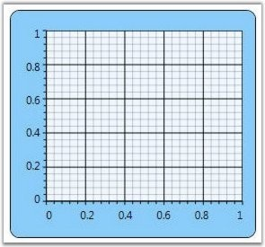
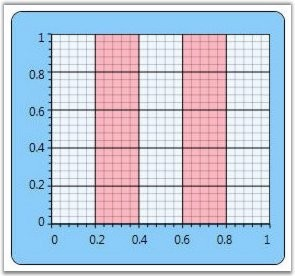

You can customize the background of the Chart Area to suit the application by specifying custom brushes for the Background property. The following code example illustrates this.
|
[XAML]
<sfchart:Chart> <sfchart:ChartArea Background="LightSkyBlue"> <sfchart:ChartSeries/> </sfchart:ChartArea> </sfchart:Chart> |
|
[C#]
ChartArea area = new ChartArea(); area.Background = Brushes.LightSkyBlue; Chart1.Areas.Add(area); |
Figure 67: Background = "LightSkyBlue"
Grid Background
The GridBackground property of the Chart Area is used to change the color of the inner area of the Chart Area object. The following code example illustrates how to set this property.
|
[XAML]
<sfchart:Chart> <sfchart:ChartArea Background="LightSkyBlue" GridBackground="AliceBlue"> <sfchart:ChartSeries/> </sfchart:ChartArea> </sfchart:Chart> |
|
[C#]
ChartArea area = new ChartArea(); area.Background = Brushes.LightSkyBlue; area.GridBackground = Brushes.AliceBlue; Chart1.Areas.Add(area); |

Figure 68: Background = "LightSkyBlue" and GridBackground = "AliceBlue"
Essential Chart alternatively provides options to apply two backgrounds to a single Chart Area. The following properties of the ChartArea class are used for this purpose.
Table 9: Property Table
|
Property |
Description |
|
AlternatingBackground |
specifies the alternating background |
|
AlternatingFillMode |
enum property that specifies whether Even or Odd interval should be filled with the alternating background color |
|
AlternatingFillDirection |
orientation property that specifies whether the alternating background should be applied horizontally or vertically |
The following code example illustrates how to set the preceding properties.
|
[XAML]
<sfchart:Chart> <sfchart:ChartArea Background="LightSkyBlue" GridBackground="AliceBlue" AlternatingGridBackground="LightPink" AlternatingFillMode="Even" AlternatingFillDirection="Horizontal"> <sfchart:ChartSeries/> </sfchart:ChartArea> </sfchart:Chart> |
|
[C#]
ChartArea area = new ChartArea(); area.Background = Brushes.LightSkyBlue; area.GridBackground = Brushes.AliceBlue; area.AlternatingGridBackground = Brushes.LightPink; area.AlternatingFillMode = AlternatingFillMode.Even; area.AlternatingFillDirection = Orientation.Horizontal; Chart1.Areas.Add(area); |

Figure 69: AlternatingGridBackground = "LightPink"
See Also